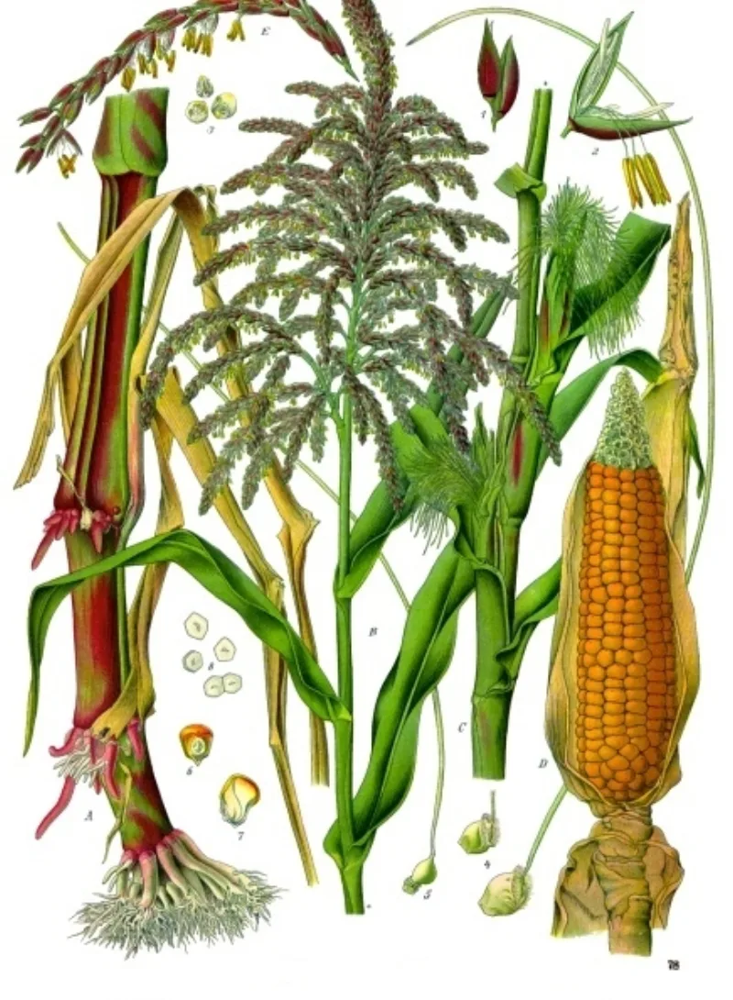
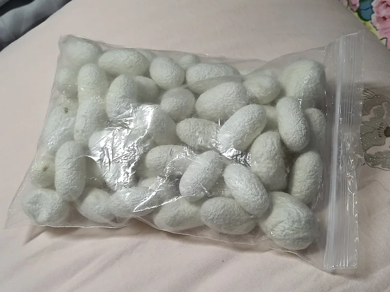
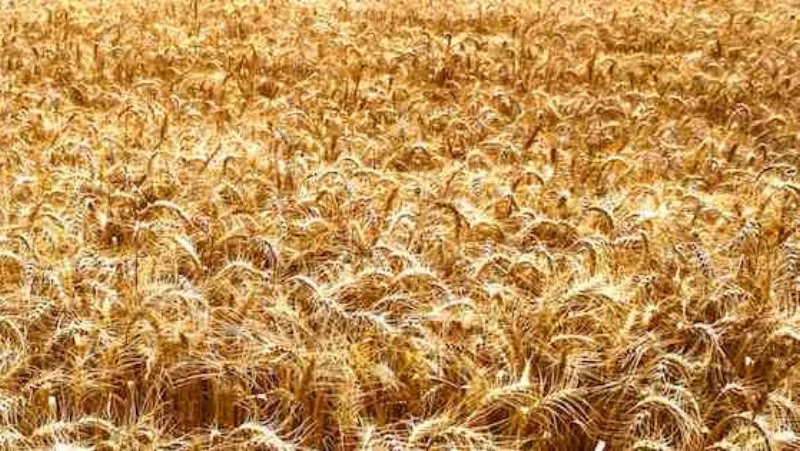

LDS scholars have a real answer here. Say so before your friend does.
Nephites and Jaredites growing wheat and barley, and producing silk. See Mosiah 9:9, Alma 1:29, Ether 9:17 and Ether 10:24.
Old World wheat, barley and silkworm farming are absent from the pre-Columbian record. Farming in the Americas ran on maize, beans and squash.
Barley is built into the measures at Alma 11:7 and 11:15. Those are weights, not coins.
The word coins was a twentieth-century chapter heading, and the church has since corrected it. Do not repeat the coins version.
Domesticated little barley, Hordeum pusillum, has since been confirmed as a cultivated grain in pre-Columbian North America. Nobody knew that in 1830.
So barley is no longer a clean anachronism. FAIR defends wheat and silk as loanshifts too.
A familiar word could stand for a native grain such as amaranth. Or for fine local fibres like kapok, and the wild-silk cloth attested in Mesoamerica.
Genuinely arguable, and lopsided. The little-barley find is a real point for them, and wild silk is attested.
Old World wheat is still unattested anywhere. And the loanshift answer again grants that the named thing was not there.
Michael Coe set out the original problem.
"The barley one has a real answer. Where does the wheat come from?"



Little barley was farmed here before Columbus, and wheat and silk may be borrowed labels.
Apologists point to little barley, Hordeum pusillum. It is now confirmed as a farmed grain in pre-Columbian North America. Nobody knew that in 1830. So barley is no longer a clean anachronism.
FAIR defends wheat and silk as loanshifts. A familiar label could stand for a like native grain such as amaranth. It could also stand for fine local fibres, like kapok, and the wild-silk cloth attested in Mesoamerica.
Arguable and lopsided: barley is a real win for them, Old World wheat is not.
The little-barley find gives their case real traction, even though the species has shifted. Wild-silk cloth is genuinely attested too. Hand both over.
Old World wheat is still unattested anywhere. And the loanshift answer again grants that the named plant was absent.
The dispute is real, but lopsided. Michael Coe set out the first form of the problem in Dialogue in 1973.